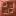

涂蜡的腐蚀青铜灯
Waxed Corroded Bronze Bulb
英文名: Waxed Corroded Bronze Bulb命名空间 ID:
rubinated_nether:waxed_corroded_bronze_bulb类型: 物品所属模组: Rubinated Nether资料检索: 🔎 在 MC百科 搜索「涂蜡的腐蚀青铜灯」获取方式
方块掉落 (1)
合成获得 (2)
无序合成Rubinated Nether

原始 JSON
{
"type": "minecraft:crafting_shapeless",
"category": "building",
"group": "waxed_corroded_bronze_bulb",
"ingredients": [
{
"item": "rubinated_nether:corroded_bronze_bulb"
},
{
"item": "minecraft:honeycomb"
}
],
"result": {
"count": 1,
"id": "rubinated_nether:waxed_corroded_bronze_bulb"
}
}有序合成Rubinated Nether


原始 JSON
{
"type": "minecraft:crafting_shaped",
"category": "redstone",
"key": {
"B": {
"item": "rubinated_nether:waxed_corroded_bronze_block"
},
"R": {
"item": "minecraft:redstone"
},
"X": {
"item": "minecraft:blaze_rod"
}
},
"pattern": [
" B ",
"BXB",
" R "
],
"result": {
"count": 1,
"id": "rubinated_nether:waxed_corroded_bronze_bulb"
}
}